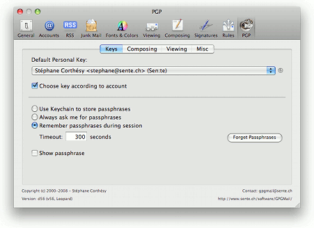
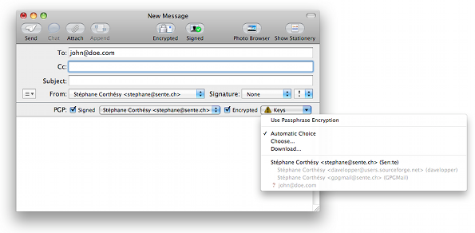
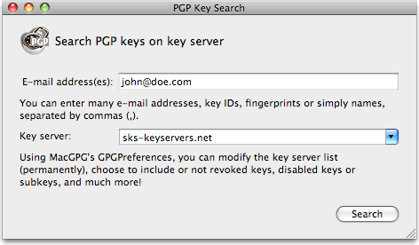
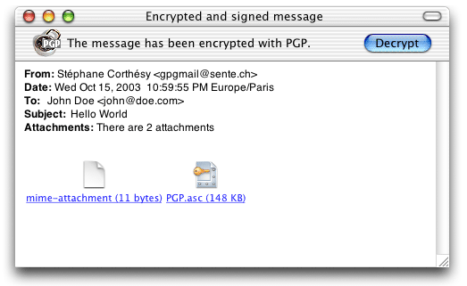

English | Français
PGP for Apple's Mail
GPGMail is a plug-in for Apple's Mail, providing a front-end to gpg for some operations. It allows you to read/write encrypted messages, as well as electronically signed messages.
GPGMail extends Apple's Mail application and allows you to read and send PGP authenticated and/or encrypted messages. You can use GPGMail for plain text and MIME messages, following RFC 3156.
GPGMail does not contain any encryption code: it is a client to gpg executable.
GPGMail is a complete hack, relying on Mail's private internal API. Use it at your own risks!
      
GPGMail has been localized in 11 different languages, thanks to contributors. The following languages are included in GPGMail: English, Spanish, Japanese, French, German, Korean, Italian, Finnish, Danish, Dutch and Swedish.
(Dec 30th, 2008) GPGMail Release 1.2.0 (v56) is currently available.
Information on this page includes:
Once started, Mail has a new submenu, PGP, in its
Message menu, containing the following items:

- Decrypt
- Authenticate
- Encrypt New Message
- Encryption Keys
- Use Passphrase Encryption
- Automatic Choice
- Choose...
- (list of public keys)
- Sign New Message
- Signing Keys
- Force Use of PGP-MIME
- Refresh Keys
| 
|
There is also a new submenu, PGP Keys, in menu View, allowing you to choose on-the-fly which attributes must be displayed for keys.
Finally, in menu Window, a new item PGP Key Search displays a PGP key search panel when clicked.
Mail also has a new Preferences panel in which you
can:
- choose your default PGP key
- when to encrypt/sign/decrypt/verify, etc.

When composing a new message, some new buttons appear in the composer window:

They allow you to choose which key you want to sign with, and which keys have to be used for encryption, when enabled. By default, GPGMail will try to find out by itself which keys are needed for encryption, according to the recipients email addresses; keys are listed in the Keys popdown button. In case it misses some keys, a warning icon will be displayed next to the popdown button. At that time you can ask GPGMail to search for missing keys on key servers (if gpg has been configured correctly, using for example GPGPreferences), using menu item Download... in popdown menu.

In the Composer window, you can also add two toolbar items (by customizing the toolbar) to set the
encryption (on/off) and add or not your PGP signature; you can also use menu items
PGP/Encrypt New Message and PGP/Sign New Message. When you compose
a new message, you can sign it (you will be asked for your key
passphrase), and/or you can encrypt it. Note that encryption/signature is always applied on the whole message.

GPGMail can use two different formats for encryption/signature: if your message consists only of plain text (no attachments, no rich text attributes like bold, italic, etc.), GPGMail will use the old PGP format, with inline ASCII-armored signature/encryption. In the other case, it will use the new OpenPGP/MIME format, with MIME attachments, which is not recognized by some mail agents like Outlook/Entourage/Eudora, but welcomed by Sylpheed, Mulberry and others. If you prefer GPGMail to always use the OpenPGP/MIME format, then you can set it in preferences, or using menu item Message/PGP/Force Use of PGP-MIME.
You can also apply some rules to let GPGMail decide when to encrypt/sign a message, according to the recipients. Look at GPGMail Composing preferences, and Robert Goldsmith's ABKey bundle.
AddressBook groups are also supported: if you use a group's name as a message recipient, and all members of this group have a valid PGP key, then GPGMail will use all these keys.
When you browse through messages, GPGMail can operate automatically, or on-demand. In automatic mode, it tries to authenticate or decrypt the currently selected message; in manual mode, you click on a button/menu to decrypt or authenticate the currently selected message; you can also use the contextual menu.
After authenticating a message, the signature information is displayed, in short or long form.

Encryption/decryption of plain text and MIME messages works.
Decryption of HTML messages works too, if there's a plain text alternative, but you need to tell Mail to display the plain text alternative after you decrypted the message (menu View/Message/Plain Text Alternative). Don't expect better support in the future!
If you allow passphrase cacheing, passphrase is either stored in cache during
a small amount of time (default is 60 seconds) - if it has not been used during this time, cache
is cleared -, or stored in your default keychain. Note that this feature does not work when gpg-agent is used.
You need MacOS X 10.5.x; GPGMail will not work as-is on other OS versions, because the internals of Apple's Mail changes on every revision.
You need a gpg version >= 1.4.0 (or gpg2), usually installed in /usr/local/bin/, but GPGMail will search for gpg2 then gpg in several locations (/usr/local/bin, /opt/local/bin, /sw/bin) and use the first found one. Or you can change user default GPGOpenPGPExecutablePath to set a different path, or use GPGPreferences 1.3.
You can use MacGPG distribution, available at MacGPG web site, or, for gpg2, MacGPG2 web site.
Copyright (c) 2000-2009, Stéphane Corthésy
All rights reserved.
Redistribution and use in source and binary forms, with or without
modification, are permitted provided that the following conditions are met:
* Redistributions of source code must retain the above copyright
notice, this list of conditions and the following disclaimer.
* Redistributions in binary form must reproduce the above copyright
notice, this list of conditions and the following disclaimer in the
documentation and/or other materials provided with the distribution.
* Neither the name of Stéphane Corthésy nor the names of GPGMail
contributors may be used to endorse or promote products
derived from this software without specific prior written permission.
THIS SOFTWARE IS PROVIDED BY STÉPHANE CORTHÉSY AND CONTRIBUTORS ``AS IS'' AND ANY
EXPRESS OR IMPLIED WARRANTIES, INCLUDING, BUT NOT LIMITED TO, THE IMPLIED
WARRANTIES OF MERCHANTABILITY AND FITNESS FOR A PARTICULAR PURPOSE ARE
DISCLAIMED. IN NO EVENT SHALL STÉPHANE CORTHÉSY AND CONTRIBUTORS BE LIABLE FOR ANY
DIRECT, INDIRECT, INCIDENTAL, SPECIAL, EXEMPLARY, OR CONSEQUENTIAL DAMAGES
(INCLUDING, BUT NOT LIMITED TO, PROCUREMENT OF SUBSTITUTE GOODS OR SERVICES;
LOSS OF USE, DATA, OR PROFITS; OR BUSINESS INTERRUPTION) HOWEVER CAUSED AND
ON ANY THEORY OF LIABILITY, WHETHER IN CONTRACT, STRICT LIABILITY, OR TORT
(INCLUDING NEGLIGENCE OR OTHERWISE) ARISING IN ANY WAY OUT OF THE USE OF THIS
SOFTWARE, EVEN IF ADVISED OF THE POSSIBILITY OF SUCH DAMAGE.
Note that some parts of the GPGMail distribution are under LGPL license: the MacGPGME framework, the gpg-error and gpgme C libraries. The GPGMail license does not apply to these parts.
- MacGPGME, copyright 2001-2008 MacGPG Project
- gpg-error, copyright 2005-2008 g10 Code GmbH
- gpgme, copyright 2001-2008 g10 Code GmbH
I appreciate feedback on this software.
Before sending bug reports or asking for new features, please have a look at the already submitted ones:
You can add new entries (or comments) anonymously - no need to have a SourceForge login. You can also contact me through the mailing list, or privately at gpgmail at sente ch
My PGP key is available from the most public keyservers.
My key ID: 0x992020D4. My key fingerprint: A5BA B3D8 4F6C AE03 8B22 76F2 5467 B616 9920 20D4
If you like it, tell it to me, and to Apple, and maybe they will help me to port it to future MacOS X releases. (now that they recognized that GPGMail exists ;-) )
GPGMail is free software, but if you want to give something... well, send me a postcard from where you live; if you're too lazy to, you can also send me a geo-tagged image from where you live.
Sen:te, Simplon 25, 1006 Lausanne, Switzerland
Till now I already received postcards from Wien (A), Utrecht (NL), Nürnberg (D), Berlin (D), Munich (D), Diemen (NL), Geneva/CERN (CH), Manchester (USA/NH), Hakalau (USA/HI), Columbia University (USA/NY), Emmendingen (D), Naantali (FI), Newport Beach (USE/CA), Ellensburg (USA/WA), Hsinshu (TW), Ulm an der Donau (D), Lafayette (USA/IN), Chicago (USA/IL), Tallahassee (USA/FL), Key West (USA/FL), Djakarta (Indonesia), Battery Point (Tasmania), Zaragoza (E), somewhere else in Germany, Heidelberg (D), Eugene (USA/OR), Brisbane (AUS), Macao, Amherst (USA/MA), Toronto (CAN), Barcelona (E), Frankfurt am Main (D). Thanks all!
I set up a mailing list, gpgmail-users@lists.sourceforge.net (which replaces the old one gpgmail-users@sente.ch). It is intended to be low traffic mailing list, mainly used by me to announce news on GPGMail development. Anyone can subscribe: go to https://lists.sourceforge.net/lists/listinfo/gpgmail-users. Recent archives can be consulted online, at http://sourceforge.net/mailarchive/forum.php?forum_name=gpgmail-users, whereas old archives (years 2002-2008) can still be consulted on-line, at http://www.sente.ch/Lists/gpgmail-users/List.html (login: sente, password: sente). Note that you may post messages too, if you want to exchange opinions/ideas on GPGMail with other users.
(Dec 30th, 2008) GPGMail 1.2.0 (v56) is currently available:
- Available for 10.5 Leopard only
- Now under BSD license (more liberal than before)
- Project now located on SourceForge.net
- Better compatibility when decrypting messages from old mailers (e.g. handles encrypted attachments)
- Added Swedish localization by Erik Hedlund
- Added new keyserver to list (SKS)
- For ASCII encrypted/signed messages, enforces use of quoted-printable - more robust - Thanks to Greg A. Woods
- Fixed support for
gpg2 (provided that you have a working agent - see FAQ)
- Fixed problem with
GPGOpenPGPExecutablePath (no longer necessary in most cases - see documentation)
- Fixed bug when sending signed+encrypted (ASCII) message with untrusted recipient, and GPGMail set to trust no key: an exception was logged, instead of being displayed to user.
- Fixed bug: was still signing when automatic signing but no matching account
- Fixed bug with manual choice of encryption keys: message might be sent without encryption/signature
- Fixed bug: draft additional headers were not removed when message was delivered
- Fixed bug with manual choice of keys: choice was lost when displaying again key list
- Fixed bug with AppleScript-generated messages, and redisplayed PGP buttons
- Fixed dependency on
/usr/local/bin/gpg
- Fixed positioning of compose accessory view
- Fixed bug with 'verbose' option in gpg.conf file
- Fixed toggle triangle state (showing/hiding the extended signature info)
- Fixed case where public key choice was still automatic even after user chose keys manually
- Fixed initial automatic choice of key according to account
- Fixed initial sign/encrypt settings, when they should be set by default
- Fixed bug with disabled toolbar items on detached viewers
- Fixed UI-compatibility problems with MailTags
- Fixed bug with non-English locales
- Fixed bug with 'Reply to All' button
- No longer supports Tiger (10.4)
- No longer supports Panther (10.3)
(Feb 5th, 2006) GPGMail 1.1.2 (v46):
- Last version for Panther/10.3
- Panther: fixed crashes
- Tiger: built as Universal Binary
- Now needs
gpg >= 1.4.x
- Tiger: temporarily disabled display of PGP elements in composer window when window is created via AppleScript, to avoid unsolvable bug - you can still change PGP settings via menu Message/PGP.
- Mail no longer freezes when with using untrusted keys for encryption
- Now fills in automatically PGP Key Download search field as soon as a key is missing (except when already performing search/import)
- Fixed passphrase encryption when signature was toggled on
- Fixed crash after message delivery failure
- Dutch localization by Marc-Siebren Kwadijk
- Added hidden user default,
GPGOpenPGPExecutablePath
- Fixed uncaught exceptions when
gpg not configured correctly
- Better error message when error related to specific key
- Better key server-related error messages (not yet localized though)
- Now accepts SHA-256, SHA-384 and SHA-512 hash algorithms
- Fixed compatibility-problem with MailTags
- Fixed sorting of keys in key chooser dialog
- Fixed bug when "only if message is unread" prefs were followed (when checked) even when automatic decryption/authentication was unchecked
- Fixed problem where encryption was not settable until signing had been set, in some cases.
- No longer tries to decrypt text/plain attachments
- Tries to decrypt/verify application/octet-stream attachments
- Fixed alignments in new message window
(Jul 17th, 2005) GPGMail Release 1.1.1 (v44):
- Changed keyboard shortcuts for sign/encrypt/decrypt/verify, using same as PGP, because our ones didn't work on Tiger anylonger
- Tiger: Fixed compatibility problem with Enigmail encrypted messages that could not get decrypted
- Fixed unlocalized error message NO_VALID_PRIVATE_KEY
- Tiger: added separator line to compose window (thanks to Felix Schaumburg)
- Changed pref text: reply to PGP encrypted/signed
- Warning icon was no longer displayed when missing PGP keys
- Tiger: toolbar icons take less space now
- Tiger: Encryption/signing works again when performed from menu/toolbar buttons, without PGP buttons in composer
- Tiger: it was no longer possible to choose any PGP keys manually
- Spanish localization by Sergio Rodríguez Concha
- Finnish localization fix by Seppo Laaksonen
- Japanese localization by Tomio Arisaka
- Sender's PGP information (sign/encrypt/MIME) stored in AddressBook is no longer evaluated by rules
- When evaluating for reply/forwarded, don't use signed/encrypted information from S/MIME messages
- Fixed German localization
- Added hidden option,
GPGAddCustomHeaders
- Tiger: Fixed install on 10.4.1 and later
- Fixed alignment of some items in composer window
- Now links to MacGPGME dynamically, to avoid license problem
- ASCII signed messages: fixed problem with Usenet signatures
- Tiger: fixed auto-decryption/auto-verification of unread messages
- Tiger: fixed refresh problem of compose accessory view when To/CC fields get higher
- Tiger: fixed iPhoto problem
- Added Danish localization by Sebastian Adorjàn Dyhr
- Fixed some ASCII signature verification problems
- Fixed UI bug when message is created by AppleScript
- Tiger: Fixed assertion failure when verifying messages
- Tiger: Was sometimes failing to report error
(Apr 29th, 2005) GPGMail Release 1.1 (v42):
- Added support for Tiger (10.4)
- Fixed invalid display of keys being revoked/expired/disabled/invalid
- Fixed compatibility problem with Windows' EudoraGPG, thanks to Georg Wedemeyer
- Fixed Finnish translation (courtesy of Asko Kauppi)
- Added basic support for AddressBook groups
- Added automatic settings (encryption, signature) based on current context
- Added retrieval of people
gpg options from their Address Book card (set by Robert Goldsmith's ABKey bundle)
- No longer tries to use invalid secret key when encrypting
- Got rid of GPGMEProxyServer
- Much faster PGP operations, notably key listing
- When a draft is restored, the encryption and signature states are restored too
- Fixed problem with attachments having non-ASCII filenames: now these chars are replaced by '_', but that doesn't affect final filename, except maybe on old mail clients.
- Fixed bug with default private key which needed to be selected manually to get actually selected
- Lot of new options
- Added PGP-settings conflict resolution panel on delivery
- Now correctly recognizes revoked/disabled keys
- No longer reports wrongly a hash algo choice error instead of the unability to sign
- Only English, French, Finnish and German localizations are complete
- And more... to be documented
(May 14th, 2004) GPGMail Release 1.0.2 (v37):
- New icons by Michel Poulain (thanks also to Moritz Guth)
- Corrected default key selection restoration
- Corrected Spanish localization
- Corrected scrolling of signature banner title
- 10.2: no longer fails to load 10.3-compiled version, but catches error and reports it to user
- New (hidden) option,
GPGRefreshesKeysOnVolumeMount, to disable automatic refresh of keys when volume is (un)mounted; default value is YES.
- New (hidden) option,
GPGDisablesSMIME, to totally disable S/MIME encryption/signature. Default value is NO.
- No longer considers text/plain attachments as potential PGP parts
- Fixed incompatibility with PGP7/Outlook: for encrypted messages, always uses
content-transfer-encoding: 7bit
- When keychain passphrase was wrong, keychain item was not deleted
- Corrected recognition of disabled/revoked secret/public keys
- User could select revoked private key -> signed message was empty
- New feature: if user shows all keys (no filter), then display key status (revoked/disabled/expired)
- New feature: extended key server list, like in GPGPreferences
- New feature: show alert when signer's key is revoked/disabled/...
- Fixed: if you select passphrase encryption then turn it back off, the signing option is unticked (when it should be ticked).
- New feature: after encryption failure due to missing keys, user can now select to send unencrypted
- Fixed: 10.3: Account pulldown menu in composer window is randomly greyed. Happens as soon as changing account changes PGP key, from now on.
- 10.3: changed disclosure triangle in signature banner
- Compose window: warning icon is now displayed in popdown menu
- Added hidden option
GPGUsesAlwaysCRLF to always use CRLF as line-ending for PGP-inline encryption/signing; default value is NO.
- Corrected recognition of disabled/revoked public keys in compose panel
- Fixed enabling/disabling of toolbar/menu items when multiple windows are open
- Fixed rare dead-lock at startup
- Last release with 10.2-compatibility
(Nov 17th, 2003) GPGMail Release 1.0.1 (v33):
- When PGPmail is installed, you're no longer forced to quit, but you're warned that it's at your own risks.
- No longer leaves orphan GPGMEProxyServer processes on quit or crash
- Corrected some error messages
- Key search results sometimes didn't display correct names (problem with accents)
- Key search now displays "revoked" status in results
- Now refreshes keys each time a volume has been (un)mounted
- Added Finnish localization by Seppo Laaksonen
- Added Japanese localization by Kory Talmage
- Applied typographical rules to French localization
- Corrected some resizing errors
- Corrected installation problem with FileVault
- Corrected installation problem in
/Network/Users/
- Corrected problem with some keys which have ISOLatin1 string encoding for the userIDs, when decrypting/signing
- Installer checks now system version
- No longer leaves a sticky "Done." message in the status view
- Added Korean localization by Sangduk Park
- Corrected problem with other mailers that added an empty line between each line when verifying/decrypting a PGP message
- Replying/forwarding/redirecting a decrypted message now quotes the decrypted message
(Oct 25th, 2003) GPGMail Release 1.0 (v30):
- Completely reviewed code; now uses GPGME (indirectly)
- Replaced most of modal dialogs by non-modal ones, à la Junk Mail
- Added support for KeyChain, thanks to Annard Brouwer
- Added support for multiple secret keys
- User can now choose private/public keys; automatically, or manually
- Added symetric encryption support (encryption without key, only with shared passphrase)
- Preferences panel has been completely revamped, with new options
- New option: enable/disable trust of keys according to web-of-trust
- New option: choose OpenPGP-MIME format; automatically, or manually
- User can use BCC recipients too
- Decryption of encrypted and signed messages no longer fails when when signature cannot be checked (missing key, etc.)
- Corrected AppleScript incompatibility
- New option: sign when encrypting
- New option: decrypt/authenticate automatically only when message is unread
- New option: in passphrase panel, you can display typed passphrase
- When encrypting message, if you miss a key, GPGMail will try to find one on your default keyserver.
- Added ability to search for keys on keyservers.
- New option: line wrapping
- New option: always encrypt
- After computer sleep, passphrase timeout is now reset
- Corrected Installer problem with path containing aliases/links
- Corrected problem with format=flowed
- Now checks presence of PGPmail
- Hash algorithm is set according to your gpg preferences
- Dropped support for 10.1
- Added support for 10.3
(Sep 10th, 2002) GPGMail Release 0.5.4 (v22):
- Added Swedish translation from Daniel Aarno
- Added Italian translation from Filippo Stefanelli
- Corrected some glitches with passphrase panel
- No longer leaves files in
/tmp
- Added an installer
- Documentation translated in French
- License has been modified
- Corrected Korean translation
- Added support for MacOS X 10.2.x
- Corrected compatibility problem between contextual menu and other Mail plug-ins
(Jun 23rd, 2002) GPGMail Release 0.5.3 (v20):
- Added Spanish translation from Sergio Rodríguez Concha
- Added French translation from Michel Poulain
- Added Japanese translation from Tomio Arisaka
- Added beautiful icons from Michel Poulain
- Modified "decrypted" icon, by Jamin Wilson
- Added new userDefaults,
GPGOpenPGPStyleOnly (default value is NO), to force always using OpenPGP-style encryption/signing
- Corrected problems with attachments which were not yet loaded
- Corrected problem with Kotoeri input method
- Added German translation from Hauke Müller
- Added Danish translation from Thomas Dyhr
- Stopped support for MacOS X Server (Rhapsody)
- Added Korean translation from Sangduk Park
- Added support for encapsulated signature (RFC1847); this is now the default method used when encrypting a signed message with OpenPGP style.
- Corrected state of newly added toolbar buttons
- Corrected problems due to character sets (no longer forces use of UTF8)
- Added contextual menu for decryption/authentication
- Corrected header decoding bug
- Corrected signature bug
- Corrected compatibility problems with Sylpheed, Evolution, Entourage, Outlook, Eudora, etc.
- Corrected compatibility problem with MacOS X 10.1.5
- Added basic support for HTML signed/encrypted messages
- Corrected problem with gpg 1.0.7: you no longer need to sign keys before using them for encryption. With gpg 1.0.6, you still need to: if you don't, encryption is refused.
- Corrected problems with MailPriority >= 1.1
(Nov 22nd, 2001) GPGMail Release 0.5.2 (v13):
- Ported to MacOS X 10.1.x
- Corrected problems with character sets
- Added keyboard shortcuts
- Now needs gpg version >= 1.0.6
- No version for MacOS X Server 1.x
(Sep 8th, 2001) GPGMail Release 0.5.1 (v8):
- Ported to MacOS X 10.0.4
- Corrected bugs in the application of RFC 3156
- Corrected lots of other bugs
(Feb 7th, 2001) GPGMail Release 0.5 (v4): initial release, for MacOS X Server 1.x and MacOS X Public Beta.
Bugs are now listed on SourceForge. You're encouraged to consult the list before reporting bugs; you can add comments to existing bug reports.
You can now submit your ideas and feature requests online at SourceForge. No need to have a login at SourceForge.
The source code as well as precompiled binaries of GPGMail can be downloaded from SourceForge. You need Xcode to compile the sources. You can also consult the Subversion repository, and perform a checkout of the most recent source code.
Packages are PGP-signed: to verify them, download also the accompanying detached signature and verify the package integrity. You can use GPGDropThing to do this, or in the Terminal, type:
gpg --verify package.dmg.asc
My key ID is 0x992020D4, and my key fingerprint is A5BA B3D8 4F6C AE03 8B22 76F2 5467 B616 9920 20D4
Old versions for 10.4 and 10.3 are available there.
- Download and install
gpg/gpg2; binaries are available from MacGPG and MacGPG2 web sites.
- Create a PGP key if necessary (see GnuPG documentation, or use GPG Keychain Access)
- Launch the Installer (automatic install), or (manual install)
- Quit Mail
- Delete previous installed version of GPGMail.mailbundle in the folder
Library/Mail/Bundles/ of your home folder (eventually also in /Library/Mail/Bundles/)
- Copy GPGMail.mailbundle into the folder
Library/Mail/Bundles/ of your home folder (create folders if necessary)
- In the Terminal, type:
defaults write com.apple.mail EnableBundles -bool true
defaults write com.apple.mail BundleCompatibilityVersion 3
- Restart Mail
I wrote a little FAQ to help you solve most common problems related to GPGMail and gpg. Please, have a look at it!
- GPGMail project's page on Sourceforge
- GnuPG, GNU Privacy Guard, official web site.
- RFC 3156, MIME Security with OpenPGP.
- PGP, The International PGP Home Page.
- PGP reference book, PGP: Pretty Good Privacy, by Simson Garfinkel.
- MacGPG, Mac GNU Privacy Guard, official web site.
- MacGPG2, Mac GNU Privacy Guard 2, official web site.
- GPGMail FAQ, Frequently Asked Questions.
- Secure email-clients with PGP/MIME.
- ABKey, Address Book GPG key manager plugin, by Robert S. Goldsmith.
- Cuk.ch, PGP-GPG : mettez vos courriers dans des enveloppes, by Olivier Pellerin (in French).
- GnuPG暗号化メールをMacOSXで使おう, GnuPGとGPGMailのインストール方法と使い方, by 有坂富雄 (Tomio Arisaka) (in japanese).
"PGP" and "Pretty Good Privacy" are registered trademarks of Network Associates, Inc.
"GnuPG" is Copyright 1998-2008 Free Software Foundation, Inc.
Thanks to Michel Poulain, from La Shampoo, for the artwork (icons & web site images), feedback, etc.
Thanks to all beta-testers and users
Thanks to translators: Sergio Rodríguez Concha (Spanish), Michel Poulain (French), Hauke Müller (German), Sangduk Park (Korean), Filippo Stefanelli and Roberto Bolzan (Italian), Tomio Arisaka and Kory Talmage (Japanese), Seppo Laaksonen (Finnish), Thomas Dyhr and Sebastian Adorján Dyhr (Danish), Marc-Siebren Kwadijk (Dutch), Daniel Aarno and Erik Hedlund (Swedish).
Special thanks to Robert S. Goldsmith, for his bundle, his comments, etc. Thanks!
One more special thank to Guillaume 'LeChatNoir' Gandreau for helping me on the project.
Software Library
More Mac OS X, WebObjects or OPENSTEP software to download from Sen:te
More Mail plug-ins developed by other people:
 Welcome
Search Welcome
Search
 Information Information
 Ask Sen:te Ask Sen:te
©Copyright 2000-2009, Stéphane Corthésy. All rights reserved.
|